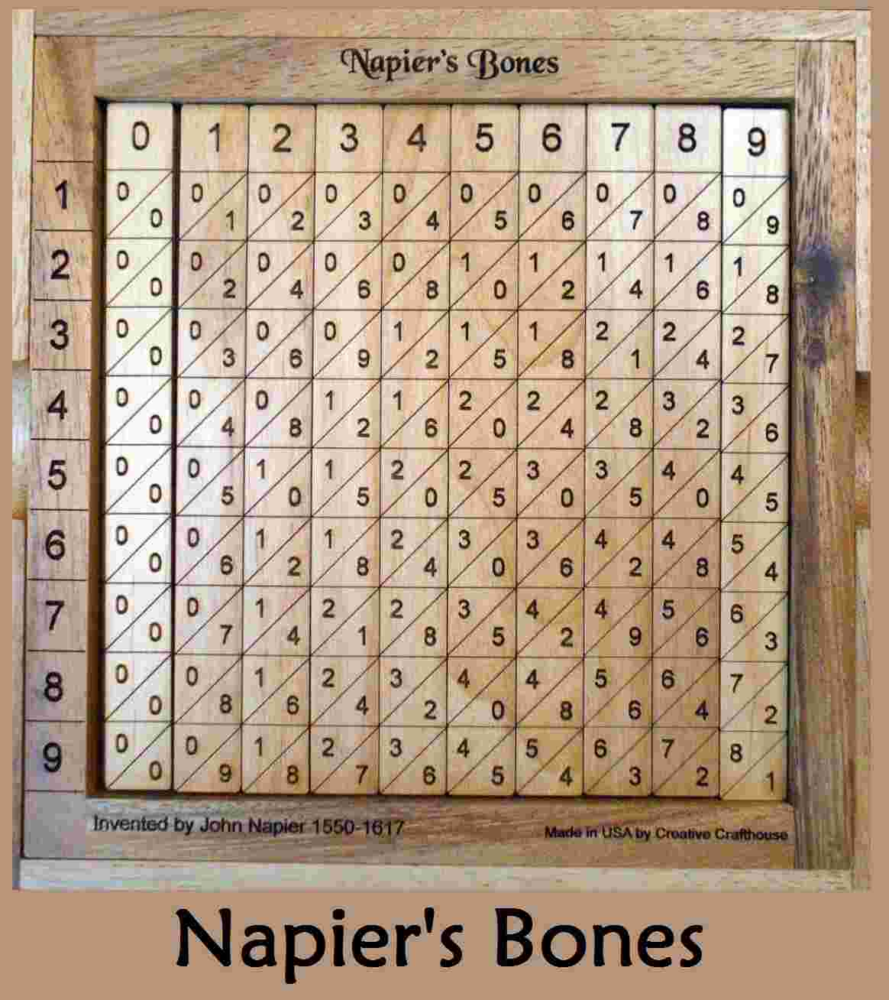
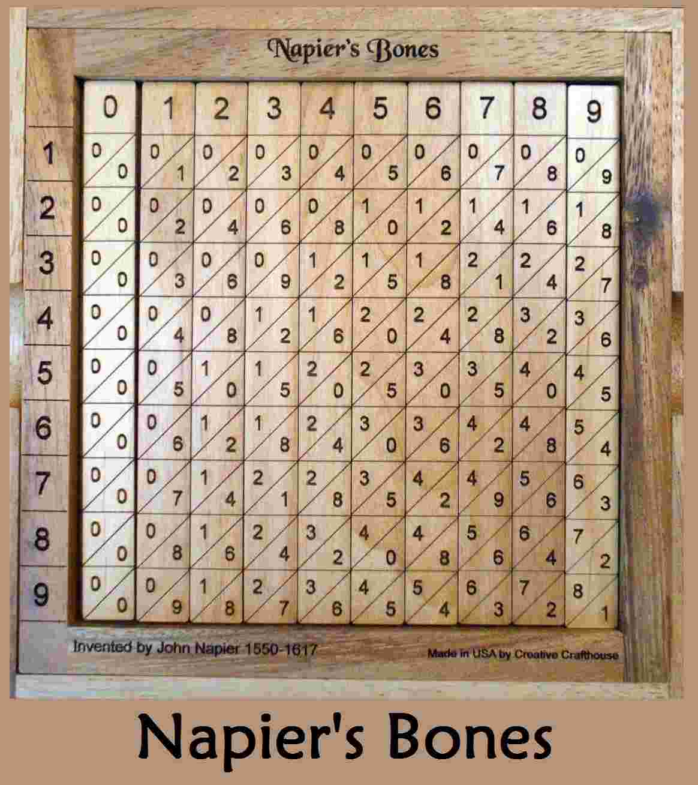

History of computer
It is said that " Neccessity is the mother of invention". This statement stands best in the case of computer. In this article, A detailed study about the history of computer is discussed.Let's understand why there was a need of a computing machine.
Introduction:
Before directly jumping into the abacus lets go back in time before abacus. The primitive man started using pebbles, stones , bones and sticks for numbering and calculation, as there were no number system. Slowly there was a need of a number system. Soon after the invention of number system there was a need of a calculating device.More computing devices were produced as technology advanced and the human intellect improved over time. With the advancement of the counting, there was demand of basic arithmetic like addition, subtraction, multiplication and division. To fill the demand many inventors came up with many devices for computing. Ultimately, advancement brought the advance computer that we use today Where abacus came into the scenario.
- Abacus: An abacus is also
known as counting frame. After the invention of number system, Human
started to search for techniques and devices that will fasten their
calculation. Then a device introduced named Abacus.
The Abacus is the most primitive calculating device. It is also
considered as the first calculator in the history of computer.
Abacus was discovered by a chinese philospher around 4000 year back. -
Napier's Bone:Napier’s Bones is a manual calculating device
using strips of ivory or other types of material that are divided into sections.
The sections are marked with numbers or digits and are used primarily for multiplication
and division. This particular method had its origins in lattice multiplication.
The purpose is for quickly finding quotients and products of numbers.
This device was invented by John Napier. He was also the first to use decimal points and binary numbers in mathematical calculations. 
 - Pascaline:
Pascaline was invented in 1642 by Blaise Pascal, a French mathematician and philosopher. It is thought
to be the first mechanical and automated calculator. It was a wooden box with gears and wheels inside.Pascalie could only do addition and subtraction, with numbers being entered by manipulating its dials. Pascal invented the machine for his father, a tax collector, so it was the first business machine too.
- Leibinz Wheel: Leibniz wheel was invented in 1673 by Gottfried Wilhelm Leibniz. In 1673, a German mathematician philosopher named Gottfried Wilhelm Leibniz improved on Pascal’s invention to create this apparatus. It was a digital mechanical calculator known as the stepped reckoner because it used fluted drums instead of gear.
- Difference Engine:Difference Engine was made by Charles babbage in early 1820s. In the early 1820s, Charles Babbage created the Difference Engine. It was a mechanical computer that could do basic computations. It was a steam-powered calculating machine used to solve numerical tables such as logarithmic tables.
- Analytical Engine:Analytical Engine was invented in year 1830 by Charles Babbage. Charles Babbage created another calculating machine, the Analytical Engine, in 1830. It was a mechanical computer that took input from punch cards. It was capable of solving any mathematical problem and storing data in an indefinite memory.
- Tabulating machine:Herman Hollerith invented Tabulating Machine in 1890. An American Statistician – Herman Hollerith invented this machine in the year 1890. Tabulating Machine was a punch card-based mechanical tabulator. It could compute statistics and record or sort data or information. Hollerith began manufacturing these machines in his company, which ultimately became International Business Machines (IBM) in 1924
- Difference Engine:Vannevar Bush introduced the first electrical computer, the Differential Analyzer. Vannevar Bush introduced the first electrical computer, the Differential Analyzer, in 1930. This machine is made up of vacuum tubes that switch electrical impulses in order to do calculations. It was capable of performing 25 calculations in a matter of minutes.
- Mark I:In year 1944, Mark I computer was invented by IBM and Harvard. Howard Aiken planned to build a machine in 1937 that could conduct massive calculations or calculations using enormous numbers. The Mark I computer was constructed in 1944 as a collaboration between IBM and Harvard.
Abacus is a latin word that means "Abakos" means calculator.
Copyright © Cyber Lab. All Rights Reserved.
Designed by K-Developers